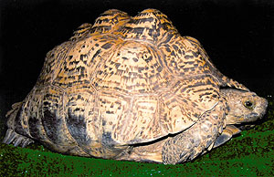
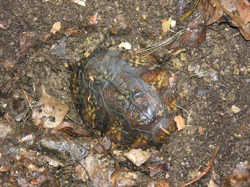

In addition to providing a well-balanced diet and a nurturing environment, gaining knowledge on key care topics is essential to ensuring that your three-toed box turtle enjoys a long and fulfilling life.
Metabolic Bone Disease- Metabolic Bone Disease (MBD) in box turtles is a common and serious condition caused by calcium deficiency, improper lighting, or inadequate diet. It leads to weakened bones, deformities, and difficulty moving. MBD typically results from a lack of UVB light, which is crucial for vitamin D3 synthesis, necessary for calcium absorption. Without proper calcium intake and UVB exposure, box turtles' bones become soft and brittle, which can cause deformities, paralysis, and even death if untreated. Proper lighting, a balanced diet with adequate calcium, and regular veterinary care are essential for prevention and management of MBD.
Shell Rot- Shell rot in box turtles is a bacterial or fungal infection that affects the outer layer of the shell, causing it to become soft, discolored, or damaged. It often results from prolonged exposure to moisture, unsanitary living conditions, or injury to the shell. Symptoms of shell rot include foul-smelling discharge, soft or spongy areas on the shell, and changes in the appearance of the scutes (the hard plates covering the shell). If left untreated, shell rot can lead to severe tissue damage and even bone infection. Proper hygiene, dry and clean habitat conditions, and prompt veterinary treatment are essential for preventing and treating shell rot.
Box turtles, like many reptiles, undergo a natural process called brumation during the colder months, which is akin to hibernation but differs in that it is not a deep, uninterrupted sleep. Instead, brumation is characterized by a significant reduction in metabolic activity, allowing the turtle to conserve energy during periods of environmental stress, such as cold weather. This process typically occurs in outdoor environments where the temperature drops significantly. In the case of outdoor box turtle owners, brumation is often encouraged by providing an appropriate substrate for the turtles to burrow into, simulating the conditions of their natural habitat. This allows the turtles to enter a state of dormancy that can last for several months, after which they are gradually brought out of brumation in the spring. Conversely, indoor box turtle owners are less likely to observe this behavior, as the stable, regulated environment typically prevents the onset of brumation. Instead, these turtles may remain more active throughout the winter months.
 